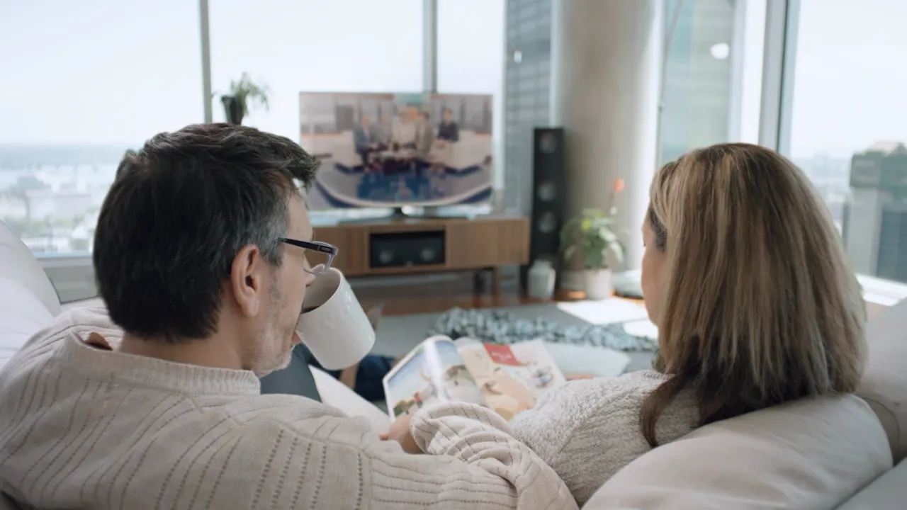
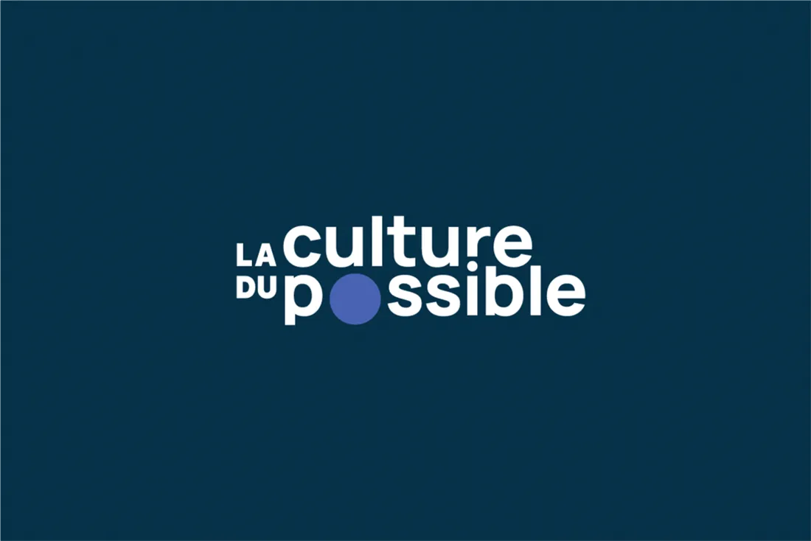

Montréal · Édition continue

Le quotidien de millions de Québécois se fabrique ici.
La télé de vos soirées, l'internet qui vous relie, le journal de votre café du matin : une seule maison, plus de 10 000 personnes.
Les cahiers de la maison
Vous les connaissez déjà. Ils vivent tous ici.
10 000+employés au Québec et au-delà
N°1expérience client au pays (télécoms)
1950l'esprit Pierre Péladeau, toujours vivant

Engagement social
La culture du possible.
Soutien à la culture, à la langue et aux communautés d'ici : l'engagement traverse toutes les marques de la maison.
Découvrir l'engagementSalle de presse